5 Multilevel models
In the previous chapters we have seen several examples of conditional effects: groups of users responding differently to design conditions, such as font size, noise and emerging technology. Dealing with differential design effects seems straight forward: identify the relevant property, record it and add an conditional effect to the model. Identifying the relevant property is, in fact, a catch-22: how would you know what is relevant before you actually conducted the research. Researchers routinely record basic demographic properties such as age and gender, but these frequently show little effects, or the effects are obvious, i.e. not interesting. In addition, such predictors are rarely more than approximations of the properties that make the real difference. Older people have weaker vision by tendency, but the individual differences in any age group are immense. Boys tend to be more technophile, but there are some real geeky girls, too.
Identifying properties that matter upfront requires careful review of past research or deep theorizing, and even then it remains guesswork. Presumably, hundreds of studies attempted to explain differences in usage patterns or performance by all sorts of psychological predictors, with often limited results. That is a big problem in design research, as variation in performance can be huge and good predictors are urgently needed. Identifying the mental origins of being fast versus slow, or motivated versus bored, is extremely useful to improve the design of systems to be more inclusive or engaging.
As we will see in this chapter, individual differences can be accounted for and measured accurately without any theory of individual differences. For researchers trained in experimental social sciences it may require a bit of getting used to theory-free reasoning about effects, as it is always tempting to ask for the why. But in applied evaluation studies, what we often really need to know is by how much users vary. The key to measuring variation in a population is to create models that operate on the level of participants, in addition to the population level, for example
- on population level, users prefer design B over A on average (\(\beta_1 = 20\))
- on the participant-level, participant \(i\) preferred B over A (\(\beta_{1i} = 20\)), \(j\) preferred A over B (\(\beta_{1j} = -5\)), +
When adding a participant-level effects, we still operate with coefficients, but in contrast to single-level linear models, every participant gets their own estimate (\(\beta_{1\cdot}\)). The key to estimating individual parameters is simply to regard participant (Part) a grouping variable on its own, and introduce it as a factor.
The subsequent two sections introduce the basics of estimating multi-level linear models, first introducing intercept-only participant-level effects 5.1 and then slope (or group difference) effects 5.2. Typically, fixed and random effects appear together in a linear multi-level model. It depends on the research question whether the researcher capitalizes on the average outcome, the variation in the population or participant-level effects.
The participant-level is really just the factor and once it is regarded alongside the population level, a model is multi-level. However, in multi-level linear modelling we usually use a different type of factor, for the particpant level. The additional idea is that the levels of the factor, hence the individuals, are part of a population. The consequences of this perspective, will be discussed in 5.7: a population is a set of entities that do vary to some extent but also clump around a typical value. And that is precisely what random effects do: levels are drawn from an overarching distribution, usually the Gaussian. This distribution is estimated simultaneously to the individual parameters (\(\beta_{1\cdot}\)), with some interesting consequences. We will return to a more fundamental research case, the Uncanny Valley, and examine the universality of this strange effect 5.4.
Once it is clear what the concept of random effects means for studying participant behaviour, we will see that it transfers with grace to non-human populations, such as designs, teams or questionnaire items. Three sections introduce multi-population multi-level models: In 5.5 we will use a random effects model with four populations and compare their relative contribution to overall variance in performance. Section @ref(re_nested) will show how multiple levels can form a hierarchy and in @ref(re_psychometrics) we will see that multi-level models can be employed the development of psychometrics tests, that apply for people. Finally, we will see how to treat tests to compare designs, which I call designometrics 5.8.4.
5.1 The Human Factor: Intercept random effects
Design science fundamentally deals with interaction between systems and humans. Every measure we take in a design study is an encounter of an individual with a system. As people differ in many aspects, it is likely that people differ in how they use and perform with a system. In the previous chapter we have already dealt with differences between users: in the BrowsingAB case, we compared two designs in how inclusive they are with respect to elderly users. Such a research question seeks for a definitive answer on what truly causes variation in performance. Years of age is a standard demographic variable and in experimental studies can be collected without hassle. If we start from deeper theoretical considerations than that, for example, we suspect a certain personality trait to play a significant role, this can become more effort. Perhaps, you need a 24-item scale to measure the construct, perhaps you first have to translate this particular questionnaire into three different languages, and perhaps you have to first invent and evaluate a scale. In my experience, personality scales rarely explain much of the variation we see in performance. It may be interesting to catch some small signals for the purpose of testing theories, but for applied design research it is more important to quantify the performance variation within a population, rather than explaining it.
At first, one might think that the grand mean model would do, take \(\beta_0\) as the population mean and \(\sigma_\epsilon\) as a measure for individual variation. But that is mistaken, as the residual variance collects all random sources, not just variance between individuals, in particular residuals are themselves composed of:
- inter-individual variation
- intra-individual variation, e.g. by different levels of energy over the day
- variations in situations, e.g. responsiveness of the website
- inaccuracy of measures, e.g. misunderstanding a questionnaire item
What is needed, is a way to separate the variation of participants from the rest. Reconsider the principles of model formulations: the likelihood captures what is repeatable, what does not repeat goes to the random term. For the problem of identifying individual differences, we simply apply this principle: to pull out a factor from the random term, repetition is needed. For estimating users’ individual performance level, all that is needed is repeated measures.
In the IPump study we have collected performance data of 25 nurses, operating a novel interface for a syringe infusion pump. Altogether, every nurse completed a set of eight tasks three times. Medical devices are high-risk systems where a single fault can cost a life. It is required that user performance is on an uniformly high level. We start the investigation with the global question:
What is the average ToT in the population?
| mean_Pop |
|---|
| 16 |
The answer is just one number and does not refer to any individuals in the population. This is called the population-level estimate or fixed effect estimate. The following question is similar, but is grouped by the participant level:
What is the average ToT of individual participants?
| Part | mean_Part |
|---|---|
| 19 | 16.6 |
| 8 | 23.8 |
| 13 | 18.5 |
| 21 | 13.1 |
| 4 | 22.4 |
Such a grouped summary can be useful for situations where we want to directly compare individuals, like in performance tests. In experimental research, individual participants are of lesser interest, as they are exchangeable entities. What matters is the total variation within the sample, representing the population of users. Once we have participant-level effects, the amount of variation can be summarized by the standard deviation:
D_Novel %>%
group_by(Part) %>%
summarize(mean_Part = mean(ToT)) %>%
ungroup() %>%
summarize(sd_Part = var(mean_Part))| sd_Part |
|---|
| 13.8 |
Generally, these are the three types of parameters in multi-level models: the population-level estimate (commonly called fixed effects), the participant-level estimates (random effects) and the participant-level standard deviation.
Obviously, the variable Part is key to build such a model. This variable groups observations by participant identity and, formally, is a plain factor. A naive approach to multi-level modelling would be to estimate an AGM, like ToT ~ 0 + Part, grab the center estimates and compute the standard deviation. Different to the descriptive analysis above and the naive approach, a multi-level model estimates fixed effects, random effects and random standard deviation simultaneously. Random effects are really just factors, with the difference that they are assumed to follow a Gaussian distribution. This will further be explained in section 5.7.
For the IPump study we can formulate a GMM model with participant-level random effect \(\beta_{p0}\) as follows:
\[ \begin{aligned} \mu_i &= \beta_0 + x_p\beta_{p0}\\ \beta_{p0} &\sim \textrm{Gaus}(0, \sigma_{p0})\\ y_i &\sim \textrm{Gaus}(\mu_i, \sigma_\epsilon) \end{aligned} \]
There will be as many parameters \(\beta_{p0}\), as there were users in the sample, and they have all become part of the likelihood. The second term describes the distribution of the participant-level group means. And finally, there is the usual random term. Before we examine further features of the model, let’s run it. In the package rstanarm, the command brm() is dedicated to estimate multi-level models with the extended formula syntax.
However, I will now introduce another Bayesian engine and use it from here on. The Brms package provides the Brm engine, which is invoked by the command brm(). This engine covers all models that can be estimated with stan_glm or stan_glmer and it uses the precise same syntax. All models estimated in this chapter, will also work with stan_glmer. That being said, Brms supports an even broader set of models, some of which we will encounter in chapter 6.
For multi-level models, the reason to switch Brms is a selfish one. It became to tedious, to support both Rstanarm and Brms with the Bayr package. The only downside of Brms is that it has to compile the model, preceding the estimation. For simple models, as in the previous chapter, the chains are running very quickly, and the extra step of compilation creates much overhead. For the models in this chapter, the chains run much longer, such that compilation time becomes almost negligible.
The posterior of the multi-level model contains four types of variables:
- the fixed effect captures the population average (Intercept)
- random effects capture how individual participants deviate from the population mean
- random factor variation (or group effects) captures the overall variation in the population.
- the residual standard deviation captures the amount of noise
With the bayr package these parameters can be extracted using the respective commands:
| model | type | fixef | center | lower | upper |
|---|---|---|---|---|---|
| M_hf | fixef | Intercept | 16 | 14.6 | 17.5 |
| re_entity | center | lower | upper |
|---|---|---|---|
| 11 | -0.079 | -3.64 | 2.76 |
| 1 | 1.035 | -1.15 | 6.35 |
| 16 | -0.012 | -3.42 | 3.04 |
| 4 | 0.867 | -1.27 | 5.87 |
| 12 | 0.268 | -2.28 | 4.39 |
| model | type | fixef | re_factor | center | lower | upper |
|---|---|---|---|---|---|---|
| M_hf | grpef | Intercept | Part | 1.5 | 0.077 | 3.76 |
Random effects are factors and enter the model formula just as linear terms. What sets them apart, is that they are estimated together with the overarching Gaussian distribution. To indicate that to the regression engine, a dedicated syntax is used in the model formula (recall that 1 represents the intercept parameter):
(1|Part)
In probability theory expressions, such as the famous Bayes theorem, the | symbol means that something to the left is conditional on something to the right. Random effects can easily be conceived as such conditional effects. Left of the | is the fixed effect that is conditional on (i.e. varies by) the factor to the right. In the simplest form the varying effect is the intercept and in the case here could be spoken of as:
ToT depends on the participant you are looking at
Speaking of factors: so far, we have used treatment contrasts most of the time, which represent the difference towards a reference level. Analogue to a factor model, we could estimate the first participants performance level and make it the reference group, intercept \(\beta_0\). All other average scores, we would express as differences to the reference participant. This seems odd and, indeed, has two disadvantages: first, whom are we to select as the reference participant? The choice would be arbitrary, unless we wanted to compare brain sizes against the grey matter of Albert Einstein, perhaps. Second, most of the time the researcher is after the factor variation rather than differences between any two individuals, which is inconvenient to compute from treatment contrasts.
The solution is to use a different contrast coding for random factors: deviation contrasts represent the individual effects as difference (\(\delta\)) towards the population mean. As the population mean is represented by the respective fixed effect, we can compute the absolute individual predictions by adding the fixef effect to the random effect:
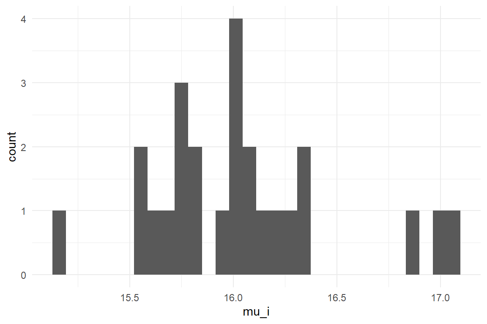
Finally, we can assess the initial question: are individual differences a significant component of all variation in the experiment? Assessing the impact of variation is not as straight-forward as with fixed effects. Two useful heuristics are to compare group-level variation to the fixed effects estimate (Intercept) and against the residual variance:
| parameter | type | fixef | re_factor | center | lower | upper |
|---|---|---|---|---|---|---|
| Intercept | fixef | Intercept | NA | 16.0 | 14.556 | 17.48 |
| sigma_resid | disp | NA | NA | 16.4 | 15.489 | 17.38 |
| Sigma[Part:Intercept,(Intercept)] | grpef | Intercept | Part | 1.5 | 0.077 | 3.76 |
The variation due to individual differences is an order of magnitude smaller than the Intercept, as well as the standard error. This lets us conclude that the novel interface works pretty much the same for every participant. If we are looking for sources of variation, we have to look elsewhere. As we have seen already in section 4.3.5, the main source of variation is learning.
5.2 Slope random effects: variance in change
So far, we have dealt with Intercept random effects that capture the gross differences between participants of a sample. We introduced these random effects as conditional effects like: “the overall performance depends on what person you are looking at”. However, most research questions rather regard differences between conditions.
Slope random effects represent, how much individuals differ in their change of response, when conditions change. Consider case BrowsingAB, where the population averages of the designs were not that far apart. That can mean they are truly not that different. But it can also mean that some users do a lot better with A, and others with B. Which design is preferred could largely depend on the person.
For an illustration of slope ramdom effects, we take a look at a data set that ships with package Lme4 (which provides a non-Bayesian engine for multi-level models). 18 participants underwent sleep deprivation on ten successive days and the average reaction time on a set of tests has been recorded per day and participant. The research question is: what is the effect of sleep deprivation on reaction time and, again, this question can be asked on population level and participant level.
The participant-level plot below shows the individual relationships between days of deprivation and reaction time. For most participants a increasing straight line seems to be a good approximation, so we can go with a parsimonous linear regression model, rather than an ordered factor model. One noticeable exception is participant 352, which is fairly linear, but reaction times get shorter with sleep deprivation. (What would be the most likely explanation? Perhaps 352 is a cheater, who slept well every night and only gained experience in doing the tests).
D_slpstd %>%
ggplot(aes(x = days, y = RT)) +
facet_wrap(~Part) +
geom_point() +
geom_smooth(se = F, aes(color = "LOESS")) +
geom_smooth(se = F, method = "lm", aes(color = "lm")) +
labs(color = "Smoothing function")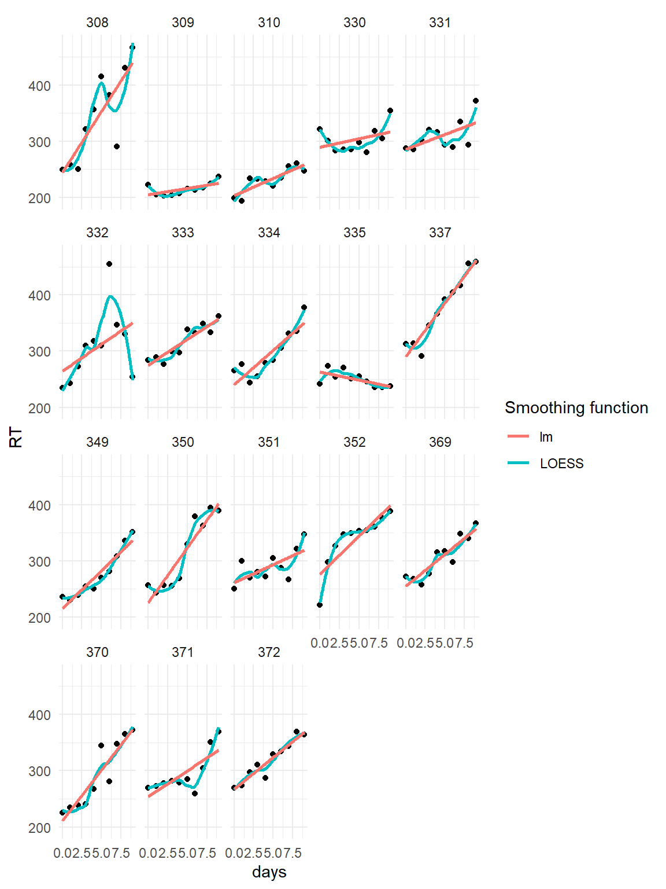
A more compact way of plotting multi-level slopes is the spaghetti plot below. By superimposing the population level effect, we can clearly see that participants vary in how sleep deprivation delays the reactions.
D_slpstd %>%
ggplot(aes(x = days,
y = RT,
group = Part)) +
geom_smooth(aes(color = "participant effects"), size = .5, se = F, method = "lm")+
geom_smooth(aes(group = 1, color = "population effect"), size = 2, se = F, method = "lm") +
labs(color = NULL)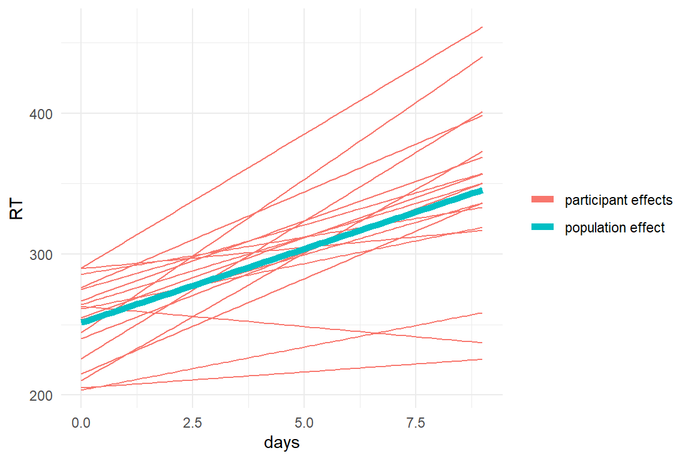
For a single level model, the formula would be RT ~ 1 + days, with the intercept being RT at day Zero and the coefficient days representing the change per day of sleep deprivation. The multi-level formula retains the population level and adds the participant-level term as a conditional statement: the effect depends on whom you are looking at.
RT ~ 1 + days + (1 + days|Part)
Remember to always put complex random effects into brackets, because the + operator has higher precedence than |. We estimate the multi-level model using the rstanarm engine.
The Bayr package provides a specialized command for multi-level tables. fixef_ml extracts the population-level estimates in CLU form and adds the participant-level standard deviation. The overall penalty for sleep deprivation is around ten milliseconds per day, with a 95% CI ranging from 7ms to 14ms. At the same time, the participant-level standard deviation is around 6.5ms, which is considerable. Based on the assumption that the central two standard deviations of a Gaussian distribution contain two-thirds of the total mass, we can expect that roughly one third of the population has a penalty of smaller than 4ms or larger than 17ms.
| fixef | center | lower | upper | SD_Part |
|---|---|---|---|---|
| Intercept | 251.4 | 237.72 | 265 | 23.11 |
| days | 10.4 | 7.08 | 14 | 6.58 |
The following plot shows the slope random effects, ordered by the center estimate.
ranef(M_slpsty_1) %>%
filter(fixef == "days") %>%
mutate(Part_ord = rank(center)) %>%
ggplot(aes(x = Part_ord, ymin = lower, y = center, ymax = upper)) +
geom_crossbar()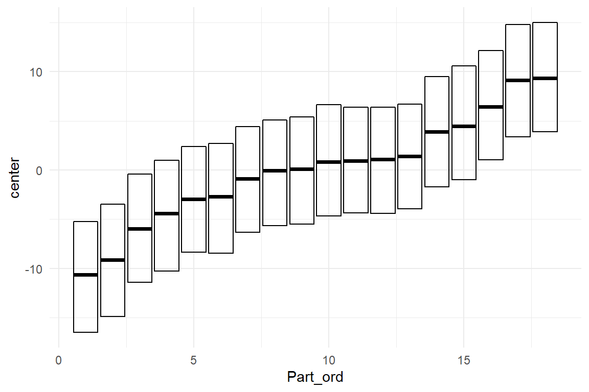
The multi-level regression model is mathematically specified as follows. Note how random coefficients \(\beta_{.(Part)}\) are drawn from a Gaussian distribution with their own standard deviation, very similar to the errors \(\epsilon_i\).
\[ \begin{aligned} y_i &= \mu_i + \epsilon_i\\ \mu_i &= \beta_0 + \beta_{0(Part)} + x_1 \beta_1 + x_{1}\beta_{1(Part)}\\ \beta_{0(Part))} &\sim \textrm{Gaus}(0,\sigma_{0(Part)})\\ \beta_{1(Part))} &\sim \textrm{Gaus}(0,\sigma_{1(Part)})\\ \epsilon_i &= \textrm{Gaus}(0, \sigma_\epsilon) \end{aligned} \]
The second line can also be written as:
\[
\mu_i = \beta_0 + \beta_{0(Part)} + x_1 (\beta_1 + x_{1}\beta_{1(Part)})\\
\]
which underlines that random coefficients are additive correction terms to the population-level effect. Whereas the ranef command reports only these corrections, it is sometimes useful to look at the total scores per participant. In package Bayr, the command re_scores computes total scores on the level of the posterior distribution. The following plot uses this command and plots the distribution.
posterior(M_slpsty_1) %>%
re_scores() %>%
clu() %>%
ggplot(aes(x = center)) +
facet_grid(~fixef, scales = "free") +
geom_density()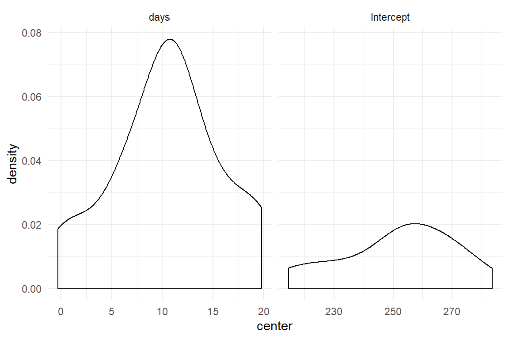
5.3 Thinking multi-level
There is a lot of confusion about the type of models that we deal with in this chapter. They have also been called hierarchical models or mixed effects models. The “mixed” stands for a mixture of so called fixed effects and random effects. The problem is: if you start by understanding what fixed effects and random effects are, confusion is programmed, not only because there exist several very different definitions. In fact, it does not matter so much whether an estimate is a fixed effect or random effect. As we will see, you can construct a multi-level model by using just plain descriptive summaries. What matters is that a model contains estimates on population level and on participant level. The benefit is, that a multi-level model can answer the same question for the population as a whole and for every single participant.
For enetering the world of multi-level modelling, we do not need fancy tools. More important is to start thinking multi-level on a familiar example: the IPump case. A novel syringe infusion pump design has been tested against a legacy design by letting trained nurses complete a series of eight tasks. Every nurse repeated the series three times on both designs. Time-on-task was measured and the primary research question is:
Does the novel design lead to faster execution of tasks?
To answer this question, we can compare the two group means using a basic CGM:
| fixef | center | lower | upper |
|---|---|---|---|
| Intercept | 27.9 | 25.8 | 29.8 |
| DesignNovel | -11.9 | -14.6 | -9.1 |
This model is a single-level model. It takes all observations as “from the population” and estimates the means in both groups. It further predicts that with this population of users, the novel design is faster on average, that means taking the whole population into account, (and forgetting about individuals).
An average benefit sounds promising, but we should be clear what it precisely means, or better what it does not mean: That there is a benefit for the population does not imply, that every individual user has precisely that benefit. It does not even imply that every user has a benefit at all. In extreme case, a small subgroup could be negatively affected by the novel design, but this could still result in a positive result on average. In the evaluation of high-risk devices like infusion pumps concerns about individual performance are real and this is why we designed the study with within-subject conditions, which allows to estimate the same model on population level and participant level. The following code produces a multi-level descriptive model. First, a summary on participant level is calculated, then it is summarized to obtain the population level. By putting both summaries into one figure, we are doing a multi-level analysis.
T_Part <-
D_pumps %>%
group_by(Part, Design) %>%
summarize(mean_Part = mean(ToT))
T_Pop <-
T_Part %>%
group_by(Design) %>%
summarize(mean_Pop = mean(mean_Part))gridExtra::grid.arrange(nrow = 1,
T_Pop %>%
ggplot(aes(x = Design, group = NA,
y = mean_Pop)) +
geom_point() +
geom_line() +
ggtitle("Population-level model (average benefits)") +
ylim(0, 60),
T_Part %>%
ggplot(aes(x = Design,
y = mean_Part,
group = Part, label = Part)) +
geom_line() +
ggrepel::geom_label_repel(size = 3, alpha = .5) +
ggtitle("Participant-level model (individual benefits)") +
ylim(0, 60))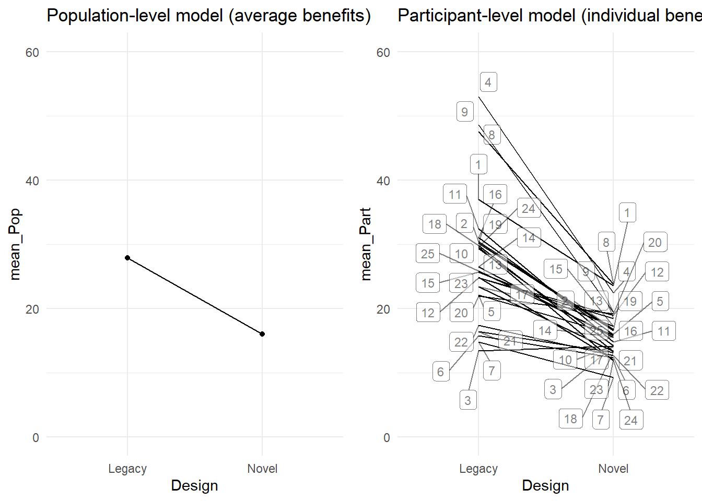
Note
- how with
gridExtra::grid.arrange()we can multiple plots into a grid, which is more flexible than using facetting - that
ggrepel::geom_label_repelproduces non-overlapping labels in plots
This is a full multi-level analysis, as it shows the same effect on two different levels alongside. In this case, the participant-level part removes all worries about the novel design. With the one small exception of participant 3, all users had net benefit from using the novel design and we can call the novel design universally better. In addition, some users (4, 8 and 9) seem to have experienced catastrophes with the legacy design, but their difficulties disappear when they switch to the novel design.
If you look again at the participant-level spaghetti plot and find it similar to what you have seen before, you are right: This is an design-by-participant conditional plot. Recall, that conditional effects represent the change of outcome, depending on another factor. In this multi-level model, this second factor simply Part(icipant). That suggests that it is well within reach of plain linear models to estimate design-by-participant conditional effects. Just for the purpose of demonstration, we can estimate a population level model, conditioning the design effect on participants. Ideally, we would use a parametrization giving us separate Intercept and DesignNovel effects per participant, but the formula interface is not flexible enough and we would have to work with dummy variable expansion. Since this is just a demonstration before we move on to the multi-level formula extensions, I use an AMM instead. A plain linear model can only hold one level at a time, which is why we have to estimate the two separate models for population and participant levels. Then we merge the posterior objects, produce a combined CLU table for plotting.
M_amm_pop <-
D_pumps %>%
stan_glm(ToT ~ 0 + Design, data = ., iter = 50, chains = 2)
M_amm_part <-
D_pumps %>%
stan_glm(ToT ~ (0 + Design):Part, data = ., iter = 50, chains = 2)T_amm <-
bind_rows(posterior(M_amm_pop),
posterior(M_amm_part)) %>%
fixef() %>%
separate(fixef, into = c("Design", "Part"))
T_amm %>%
ggplot(aes(x = Design, y = center, group = Part, color = model)) +
geom_line()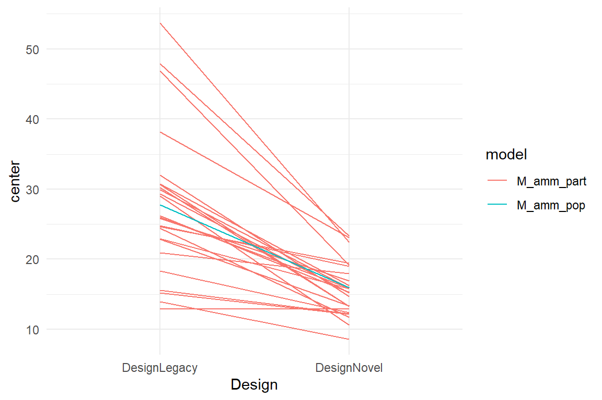
In the first place, the convenience of (true) multi-level models is that both (or more) levels are specified and estimated as one model. For the multi-level models that follow, we will use a specialized engine, brm() (generalized multi-level regression) that estimates both levels simultaneously and produce multi-level coefficients. The multi-level CGM we desire is written like this:
In the formula of this multi-level CGM the predictor term (1 + Design) is just copied. The first instance is the usual population-level averages, but the second is on participant-level. The | operator in probability theory means “conditional upon” and here this can be read as effect of Design conditional on participant.
For linear models we have been using the coef() command to extract all coefficients. Here it would extract all coefficients on both levels. With multi-level models, two specialized command exist to separate the levels: we can extract population-level effects using the fixef() command (for “fixef effects”). All lower level effects can be accessed with the ranef command, which stands for random effects. Here, the population level coefficients are absolute means, whereas random effects are not. Usually, random effects are differences towards the population-level. This is why random effects are always centered at zero. In the following histogram, the distribution of the DesignNovel random effects are shown. This is how much users deviate from the average effect in the population.
| fixef | center | lower | upper |
|---|---|---|---|
| Intercept | 28.1 | 24.4 | 31.6 |
| DesignNovel | -12.1 | -15.0 | -8.3 |
ranef(M_mlcgm) %>%
rename(Part = re_entity, `deviation` = center) %>%
ggplot(aes(x = deviation)) +
facet_grid(~fixef) +
geom_histogram()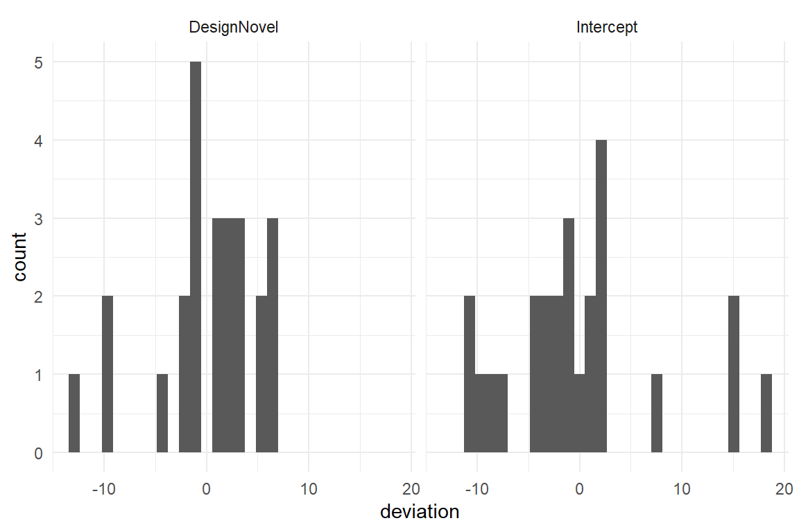
The distribution of random effects should resemble a Gaussian distribution. It is usually hard to tell with such small sample sizes, but it seems that the Intercept effects have a left skew. As we will see in chapter 6, this problem is not surprisung and can be resolved. The distributions are also centered at zero, which is not a coincidence, but the way random effects are designed: deviations from the population mean. That opens up two interesting perspectives: first, random effects look a lot like residuals 4.1.2, and like those we can summarize a random effects vector by its standard deviation, using the grpef command from package Bayr.
| fixef | center | lower | upper | SD_Part |
|---|---|---|---|---|
| Intercept | 28.1 | 24.4 | 31.6 | 8.45 |
| DesignNovel | -12.1 | -15.0 | -8.3 | 6.07 |
Most design research is located on the population level. We want to know how a design works, broadly. Sometimes, stratified samples are used to look for conditional effects in (still broad) subgroups. Reporting individual differences makes little sense in such situations. The standard deviation summarizes individual differences and can be interpreted the degree of diversity. The command bayr::fixef_ml is implementing this by simply attaching the standard deviation center estimates to the respective population-level effect. As coefficients and standard deviations are on the same scale, they can be compared. Roughly speaking, a two-thirds of the population is contained in an interval twice as large as the SD.
| fixef | center | lower | upper | SD_Part |
|---|---|---|---|---|
| Intercept | 28.1 | 24.4 | 31.6 | 8.45 |
| DesignNovel | -12.1 | -15.0 | -8.3 | 6.07 |
That having said, I believe that more researchers should watch their participant levels more closely. Later, e will look at two specific situations: psychometric models have the purpose of measuring individuals 5.8 and those who propose universal theories (i.e., about people per se) must also show that their predictions hold for each and everyone 5.4.
5.4 Testing universality of theories
Often, the applied researcher is primarily interested in a population-level effect, as this shows the average expected benefit. If you run a webshop, your returns are exchangeable. One customer lost can be compensated by gaining a new one. In such cases, it suffices to report the random effects standard deviation. If user performance varies strongly, this can readily be seen in this one number.
In at least two research situations, going for the average is just not enough: when testing hazardous equipment and when testing theories. In safety critical research, such as a medical infusion pump, the rules are different than for a webshop. The rules are non-compensatory, as the benefit of extreme high performance on one patient cannot compensate the costs associated with a single fatal error on another patient. For this asymmetry, the design of such a system must enforce a robust performance, with no catastrophes. The multi-level analysis of the infusion pumps in 5.3 is an example. It demonstrated that practically all nurses will have a benefit from the novel design.
The other area where on-average is not enough, is theory-driven experimental research. Fundamental behavioural researchers are routinely putting together theories on The Human Mind and try to challenge these theories. For example the Uncanny Valley effect ??: one social psychologist’s theory could be that the Uncanny Valley effect is caused by religious belief, whereas a cognitive psychologist could suggest that the effect is caused by a category confusion on a fundamental processing level (seeing faces). Both theories make universal statements, about all human beings. Universal statements can never be proven, but can be is tested by finding counter-evidence. If there is one participant who is provenly non-religious, but falls into the Uncanny Valley, our social psychologist would be proven wrong. If there is a single participant at all, who does not fall for the Uncanny Valley, the cognitive psychologist was wrong.
Obviously, this counter-evidence can only be found on participant level. In some way, the situation is analog to robustness. The logic of universal statements is that they are false if there is one participant who breaks the pattern, and there is no compensation possible. Unfortunately, the majority of fundamental behavioural researchers, have ignored this simple logic and still report population-level estimates when testing universal theories. In my opinion, all these studies should not be trusted, before a multi-level analysis shows that that the pattern exists on participant level.
In 4.6, the Uncanny Valley effect has been demonstrated on population level. This is good enough, if we just want to confirm the Uncanny Valley effect as an observation, something that frequently happens, but not necessarily for everyone. The sample in our consisted of mainly students and their closer social network. It is almost certain, that many of the tested persons were religious and others were atheists. If the religious-attitude theory is correct, we would expect to see the Uncanny Valley in several participants, but not in all. If the category confusion theory is correct, we would expect all participants to fall into the valley. The following model performs the polynomial analysis as before 4.6, but multi-level:
M_poly_3_ml <-
RK_1 %>%
brm(response ~ 1 + huMech1 + huMech2 + huMech3 +
(1 + huMech1 + huMech2 + huMech3|Part),
data = ., iter = 2500)
P_poly_3_ml <- posterior(M_poly_3_ml)
PP_poly_3_ml <- post_pred(M_poly_3_ml, thin = 5)One method for testing universality is to extract the fitted responses (predict) and perform a visual examination: can we see a valley for every participant?
T_pred <-
RK_1 %>%
mutate(M_poly_3_ml = predict(PP_poly_3_ml)$center)
T_pred %>%
ggplot(aes(x = huMech, y = M_poly_3_ml, group = Part)) +
geom_smooth(se = F)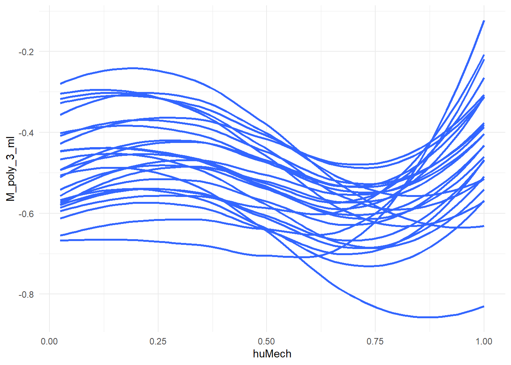
This spaghetti plot broadly confirms, that all participants experience the Uncanny Valley. For a more detailedanalysis, a facetted plot would be better suited, allowing to inspect the curves case-by-case. We proceed directly to a more formal method of testing universality: In ?? we have seen how the posterior distributions of shoulder and trough can be first derived and then used to give a more definitive answer on the shape of the polynomial. It was argued that the unique pattern of the Uncanny Valley is to have a shoulder left of a trough. These two properties can be checked by identifying the stationary points. The proportion of MCMC iterations that fulfill these properties can is evidence that the effect exists. For testing universality of the effect, we just have to run the same analysis on participant-level. Since the participant-level effects are deviations from the population-level effect, we first have to add the population level effect to the random effects (using the Bayr command re_scores), which creates absolute polynomial coefficients. The two command trough and shoulder from package Uncanny ((github.com/schmettow/uncanny)[http://github.com/schmettow/uncanny]) require a matrix of coefficients, which is done by spreading out the posterior distribution table.
T_univ_uncanny <-
P_poly_3_ml %>%
re_scores() %>%
select(iter, Part = re_entity, fixef, value) %>%
tidyr::spread(key = "fixef", value = "value") %>%
select(iter, Part, huMech0 = Intercept, huMech1:huMech3) %>%
mutate(trough = uncanny::trough(select(.,huMech0:huMech3)),
shoulder = uncanny::shoulder(select(.,huMech0:huMech3)),
has_trough = !is.na(trough),
has_shoulder = !is.na(shoulder),
shoulder_left = trough > shoulder,
is_uncanny = has_trough & has_shoulder & shoulder_left)T_univ_uncanny %>%
group_by(Part) %>%
summarize(prob_uncanny = mean(is_uncanny),
prob_trough = mean(has_trough),
prob_shoulder = mean(has_shoulder)) %>%
ggplot(aes(x = Part, y = prob_uncanny)) +
geom_col() +
geom_label(aes(label = prob_uncanny)) +
theme(axis.text.x = element_text(angle = 45))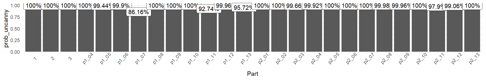
The above plot shows the probability that a participant experiences the Uncanny Valley, as defined by polynomial stationary points. Everyone in our sample experienced the Uncanny Valley effect. Every single MCMC step (remember, every step is a complete polynomial) is positive. This complete absence of counter-evidence may raise suspicions. If this is all based on a random walk, we should at least see a few deviations. The reason for that is simply that the number of MCMC runs puts a limit on the resolution. If we increase the number of iterations enough, we would eventually see few deviant sample drop and measure the tiny chance that a participant does not fall for the Uncanny Valley.
While this is great news for all scientists who think that the Uncanny Valley effect is innate (rather than cultural), it does not demonstrate the actual identification of deviant participants. Therefore, we briefly re-visit case Sleepstudy, for which we have estimated a multi-level linear regression model to render individual detoriation of reaction time as result of sleep deprivation. By visual inspection, we identified a single deviant participant who showed an improvement over time. However, the fitted lines a based on point estimates, only (the median of the posterior). Using the same technique as above, it is possible to calculate the participant-level probabilities for the slope being positive, as expected.
P_scores <-
posterior(M_slpsty_1) %>%
re_scores() %>%
mutate(Part = re_entity)
P_scores %>%
filter(fixef == "days") %>%
group_by(Part) %>%
summarize(prob_positive = mean(value >= 0)) %>%
mutate(label = str_c(100 * round(prob_positive, 4), "%")) %>%
ggplot(aes(x = Part, y = prob_positive)) +
geom_col() +
geom_label(aes(label = label), vjust = 1) +
theme(axis.text.x = element_text(angle = 45))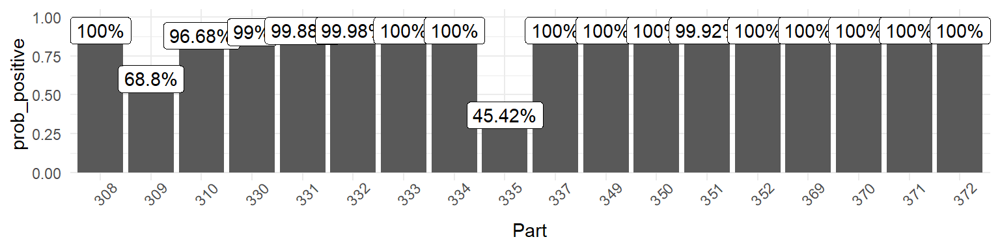
All, but participants 309 and 335 almost certainly have positive slopes, experiencing a detoriation of reaction time. Participant 335 we had identified earlier by visual inspection. Now, that we account for the full posterior distribution, it seems a little less suspicious. Basically, the model is almost completely undecisive whether this is a positive and negative effect. The following plot shows all the possible slopes the MCMC random walk has explored. While participant 335 clearly is an outlier, there is no reason to get too excited and call him or her a true counter-example from the rule that sleep deprivation reduced performance.
P_scores %>%
filter(Part == 335, fixef == "days") %>%
ggplot() +
xlim(0.5, 9) +
ylim(-50, 50) +
geom_abline(aes(intercept = 0, slope = value), alpha = .01)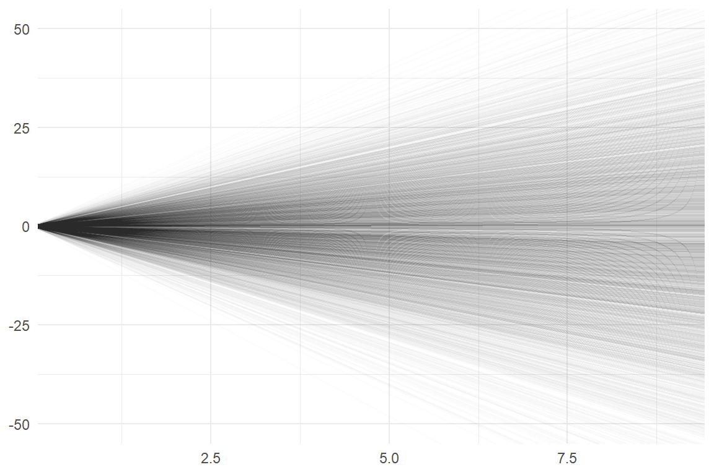
That being said, the method of posterior-based test statistics can also be used for analysis of existence. In the Sleepstudy case a hypothetical question of existence would be that there exist persons who are completely unsensitive to sleep deprivation. Why not? Recently, I saw a documentary about a guy who could touch charged electric wires, because due to a rare genetic deviation, his skin had no sweat glants. Universal statements can only be falsified by a counter-example. Statements of existence can be proven by just a single case. For example, in the 1980 dyslexia became more widely recognized as a defined condition. Many parents finally got an explanation for the problems their kids experienced in school. Many teachers complained that many parents would just seek cheap excuses for their lesser gifted offsprings. And some people argued that dyslexia does not exist and that the disability to read is just a manifestation of lower intelligence. According to the logic of existence, a single person with otherwise good functioning, but slow in learning how to read suffices to proof dyslexia. These have been found in the meantime.
5.5 Non-human populations and cross-overs
With multi-level models design researchers can examine how a design affects the population of users as a whole, as well as on individual level. If there is little variation between users, it can be concluded that the effect is uniform in the population of users. In this section we will generalize the term population and extend the application of multi-level modelling to other types of research entities, such as designs, questionnaire items and tasks.
Many studies in, what one could call fundamental design research seek to uncover general laws of design that may guide future system development. Fundamental design research is not concerned with choosing between individual designs, whether they are good enough or not, but with seperating the population of possible designs into good ones and bad ones by universal statements, such as “For informational websites, broad navigation structures are better than deep ones”. Note how this statement speaks of designs (not users) in an unspecified plural. It is framed as a universal law for designs.
Comparative evaluation studies, such as the IPump case, are not adequate to answer such questions, simply because you cannot generalize from a sample of two to all possible designs. This is only possible under strict constraints, namely that the two designs under investigation only differ in one design property. For example two versions of a website present the same web content in a deep versus a wide hierarchy, but layout, functionality are held constant. And even then, we should be very careful with conclusions, because there can be interaction effects. For example, the rules could be different for a website used by expert users.
If the research question is universal, i.e. aiming at general conclusions on all designs (of a class), it is inevitable to see designs as a population from which we collect a sample. The term population suggests a larger set of entities, and in fact many application domains have an abundance of existing designs and a universe of possible designs. Just to name a few: there exist dozens of note taking apps for mobile devices and hundreds of different jump’n’run games. Several classes of websites count in the ten thousands, such as webshops and municipal websites.
Whereas we can define classes in any way and for everything we want, the term population, in a statistical not biological sense, has a stronger implication. A population contains individuals and these individuals vary only to some extent. At the same time, it is implied that we can identify some sort of typical value for a population, such that most individuals are clumped around this typical value. Essentially, if it looks similar to one of the basic statistical distributions 3.4.2, we can call it a population. To illustrate the difference between a class and a population. Vehicles are a class of objects that transport people or goods. This broad definition covers many types of vehicles, including bicycles, rikshas, cars, buses, trucks and container vessels. If the attribut under question is the weight, we will see a distribution spreading from a 10 kilograms up to 100 tons. That is a a scale of 1:10.000 and the distribution would spread out like butter on a warm toast. Formally, we can calculate the average weight of a vehicle, but that would in no way be a typical value.
It does not stop here. While design research is clearly about the user-design encounter, other research entities exist that we could call a population. The most routinely used non-human populations in design research besides designs are tasks, situations and questionnaire items. We briefly characterize the latter three and proceed to a case study that employs three populations at once.
Tasks: Modern informational websites contain thousands of information pieces and finding every one of those can be considered a task. At the same time, it is impossible to cover them all in one study, such that sampling a few is inevitable. We will never be able to tell the performance of every task, but using random effects it is possible to estimate the variance of tasks. Is that valuable information? Probably it is in many cases, as we would not easily accept a design that prioritizes on a few items at the expense of many others, which are extremely hard to find.
Situations: With the emerge of the web, practically everyone started using computers to find information. With the more recent breakthrough in mobile computing, everyone is doing everything using a computer in almost every situation. People chat, listen to music and play games during meals, classes and while watching television. They let themselves being lulled into sleep, which is tracked and interrupted by smart alarms. Smartphones are being used on trains, while driving cars and bikes, however dangerous that might be, and not even the most private situations are spared. Does the usability of messaging, navigation and e-commerce apps generalize across situations? Again, a study to examine performance across situations would best sample from a population of situations.
Questionnaire items: Most design researchers cannot refrain from using questionnaires to evaluate certain elucive aspects of their designs. A well constructed rating scale consists of a set of items that trigger similar responses. At the same time, it is desireable that items are unsimilar to a degree, as that establishes good discrimination across a wide range. In ability tests, for example to assess people’s intelligence or math skills, test items are constructed to vary in difficulty. The more ability a person has, the more likely will a very difficult item be solved correctly. In design research, rating scales cover concepts such as perceived mental workload, perceived usability, beauty or trustworthiness. Items of such scales differ in how extreme the proposition is, like the following three items that could belong to a scale for aesthetic perception:
- The design is not particularly ugly.
- The design is pretty.
- The design is a piece of art.
For any design it is rather difficult to get a positive response on item 3, whereas item 1 is little of a hurdle. So, if one thinks of all possible propositions about beauty, any scale is composed of a sample from the population of beauty propositions.
If we look beyond design research, an abundance of non-human populations can be found in other research disciplines, such as:
- products in consumer research
- phonemes in psycholinguistics
- test items in psychometrics
- pictures of faces in face recognition research
- patches of land in agricultural studies
In all these cases it is useful (if not inevitable) to ask multi-level questions not just on the human population, but on the encounter of multiple populations. In research on a single or few designs, such as in A/B testing, designs are usually thought of (and modelled) as common fixed-effects factors. However, when the research question is more fundamental, such that it regards a whole class of designs, it is more useful to think of designs as a population and draw a sample. In the next secion we will see an example, where a sample of users encounters a sample of designs and tasks.
In experimental design research, the reserach question often regards a whole class of designs and it inevitable (although often done wrong) to view designs as a population. As we usually want to generalize across users, that is another sample. A basic experimental setup would be to have every user rate (or do a task) on every design, which is called a complete (experimental) design, but I prefer to think of it as a complete encounter.
Every measure is an encounter of one participant and one design. If a multi-item rating scale is used, measures are an encounter between three populations. Every measure combines the impact from three members from these populations. With a single measure, the impact factors are inseparable. But if we have many measures, we can apply a cross-classified multi-level model (CRMM). An intercept-only CRMM just adds intercept random effects for every population.
As we will see in 5.8.4, the individual random coefficients of a CRMM can be used for psychometric evaluation of rating scales. In the following example, the question is a comparison of diversity across populations. Three decades ago, [%Dennis Egan] published one of the first papers on individual differences in computer systems design and made the following claim:
‘differences among people usually account for much more variability in performance than differences in system designs’ 1
What is interesting about this research question is that it does not speak about effects, but about variability of effects and seeks to compare variability of two totally different populations. In the following we will see how this claim can be tested by measuring multiple encounters between designs and users, apply an intercept-only CRMM and compare the random factor standard deviations.
Egan’s claim has been cited in many papers that regarded individual differences and we were wondering how it would turn out in the third millenium, with the probably most abundant of all application domains: informational websites. For the convenience, we chose the user population of student users, with ten unversity websites as our design sample. Furthermore, ten representative tasks on such websites were selected, which is another population. During the experiment, all 41 participants completed 10 information search items such as:
On website [utwente.nl] find the [program schedule Biology].
Note that ToT has been log-transformed for compliance with the assumptions of Linear Models. Generally, the advice is to use a Generalized Linear Model instead 6.3.2.
Egan’s claim is a two-way encounter to which we added the tasks as a third population. However, our data seemed to require a fourth random effect, which essentially is an interaction effect between tasks and websites: how easy a task is, largely depends on the webite where it is carried out. For example, one university website could present the library on the homepage, whereas another websites hides it deep in its navigation structure. The following grid of histogram shows the marginal distributions of human and non-human populations. The individual plots were created using the following code template:
D_egan %>%
group_by(Part) %>%
summarize(avg_logToT = mean(logToT)) %>%
ggplot(aes(x = avg_logToT)) +
geom_histogram() +
labs(title = "distribution of participant average log-times") +
xlim(1.5,6.5)
There seems to be substantial variation between participants, tasks and items, but very little variation in designs. We build a GMM for the encounter of the four populations.
M_1 <- D_egan %>%
brm(logToT ~ 1 + (1|Part) + (1|Design) + (1|Task) + (1|Design:Task),
data = .)
P_1 <- posterior(M_1)A Bayesian multi-level model estimates the standard deviation alongside with coefficients, such that we can compare magnitude and certainty of variability. In addition, we can always compare a random factor standard deviation to the standard error.
P_1 %>%
filter(type == "grpef" | type == "disp") %>%
mutate(re_factor = if_else(type == "disp", "Obs", re_factor),
# re_factor = factor(re_factor,
# levels = c("Obs", "Part", "Design", "Task", "Design:Task")),
re_factor = mascutils::reorder_levels(re_factor, c(4, 2, 5, 3, 1))) %>%
ggplot(aes(x = value)) +
geom_density() +
labs(x = "random effect standard deviation") +
facet_grid(re_factor~.)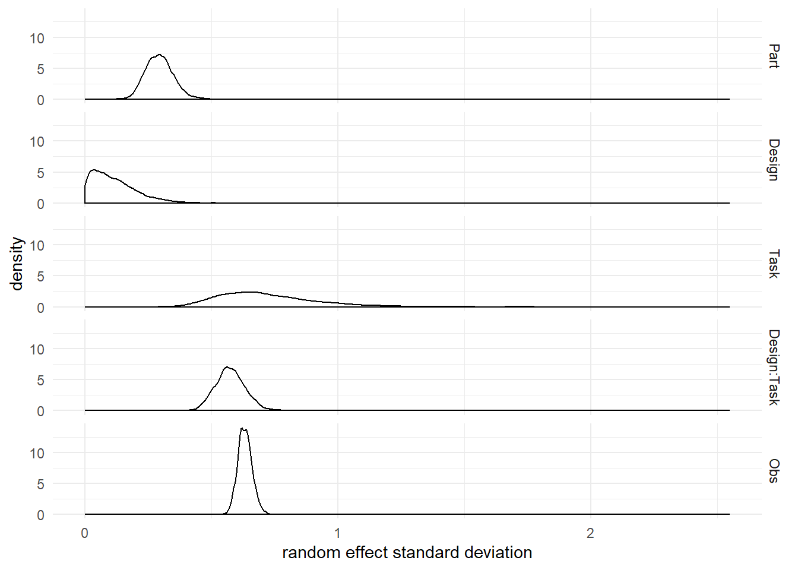
The outcomes of our study are indecisive regarding Egan’s claim. Variance of participants is stronger thnan variance of designs, but not by much. Both factors also produce much less variability in measures than does the noise, which we here regard a observation-level random effect. Tasks seem to have the overall strongest effect, but this comes with huge uncertainty. The strongest variability is found in the sample of Design-Task pairs, which is interesting
A secondary observation on the posterior plot is that some effects are rather certain, such as Obs and Design:Task, whereas others are extremely uncertain, especially Task. There is a partial explaination for this: the variation is estimated from the “heads” in thehuman or non-human population. It therefore strongly depends on respective sample size. Design and Task have a meager \(N = 10\), which is why the estimate are so uncertain. With \(N = 41\) the participant level estimate has more data and reaches better certainty, same for the pairs (\(N = 100\)). The observations level can employ to all 410 observations, resulting in a highly certain estimate.
We proceed with a formal check of Egans claim, using the same technique as in ?? and ??. What is the probability, that Egan is right? We create a Boolean variable and summarize the proportion of MCMC draws, where \(\sigma_ \textrm{Part} > \sigma_ \textrm{Design}\) holds.
C_Egan_is_right <-
P_1 %>%
filter(type == "grpef", re_factor %in% c("Part", "Design")) %>%
select(chain, iter, re_factor, value) %>%
spread(re_factor, value) %>%
summarize(Prop_Egan_is_right = mean(Part > Design)) %>%
c()
C_Egan_is_right## $Prop_Egan_is_right
## [1] 0.944A chance of \(0.944\) can count as good evidence in favour of Egan’s claim, although it certainly does not match the “much more” in the original quote. However, if we take the strong and certain Design:Task effect into account, the claim could even be reversed. Apparently, the difficulty of a task depends on the design, that means, it depends on where this particular designer has placed an item in the navigation structure. That clearly is a design feature and therefore counts as strong counter-evidence.
5.6 Nested random effects
In some research designs, we have populations, where every member contains a population by itself. A classic example is from educational research: a sample of schools is drawn and inside every school a sample of students is selected. Like cross-classified models, nested models consist of multiple levels. The difference is that if one knows the lowest (or: a lower) level of an observation, the next higher level is unambiguous, like:
- every student is in exactly one class
- every participant is from exactly one professional group
Nested random effects (NRE) represent nested sampling schemes. As we have seen above, cross-classified models play an important role in design research, due to the user/task/design encounter. NREs are more common in research disciplines where organisation structures or geography plays a role, such as education science (think of the international school comparison studies PISA and TIMMS), organisational psychology or political science. One examples of a nested sampling structure in design research is the CUE8 study, which is the eighth instance of Comparative Usability Evaluation (CUE) studies by Rolf Molich [%CUE8]. Different to what the name might suggest, not designs are under investigation in CUE, but usability professionals. The over-arching question in the CUE series is the performance and reliability of usability professionals when evaluating designs. Earlier studies sometimes came to devastating results regarding consistency across professional groups when it comes to identifying and reporting usability problems. We always knew, qualitative analysis is much harder to do in an objective way, did we not? The CUE8 study lowered the bar, by asking whether several professional groups will arrive at consistent measures for time-on-task.
The CUE8 study measured time-on-task in usability tests, which had been conducted by 14 different teams. The original research question was: How reliable are time-on-task measures across teams? All teams used the same website (a car rental company) and the same set of tasks. All teams did moderated or remote testing (or both) and recruited their own sample of participants. So, the analysis can performed on three levels: the population level would tell us the overall performance on this website. That could be interesting for the company running it. Below that are the teams and asking how they vary is the primary research question. At the same time, participants make another level of analysis. Because every participant is assigned to exactly one team, we can call this a nested situation. If that weren’t the case, say there is one sample of participants shared by the teams, that would be just cross-classification.
As the original research question is on the consistency across teams, we can readily take the random effect variance as a measure for the opposite: when variance is high, consistency is low. But, how low is low? It is difficult to come up with an absolute standard for inter-team reliability. Because we also have the participant-level, we can resort to a relative standard: how does the variation between teams compare to variation between individual participants?
Under this perspective, we examine the data. This time, we have real time-on-task data and as so often, it is highly skewed. Again, we use the trick of logarithmic transformation to obtain a more symmetric distribution of residuals. The downside is that the outcome variable may not be zero. For time-on-task data this is not an issue. In fact, the original CUE8 data set contains several observations with unrealistically low times. Before proceeding to the model, we explore the original variable ToT on the two levels (Participant and Team): In the following code the mean ToT is computed for the two levels of analysis, participants and teams and shown in ascending order.
attach(CUE8)
D_cue8
D_part_mean <-
D_cue8 %>%
group_by(Part, Condition) %>%
summarize(mean_ToT = mean(ToT), na.rm = T,
n_Obs = n()) %>%
ungroup() %>%
rename(Unit = Part) %>%
mutate(percentile = percent_rank(mean_ToT),
Level = "Part")
D_team_mean <-
D_cue8 %>%
group_by(Team, Condition) %>%
summarize(mean_ToT = mean(ToT, na.rm = T),
n_Obs = n()) %>%
ungroup() %>%
rename(Unit = Team) %>%
mutate(percentile = percent_rank(mean_ToT),
Level = "Team")
D_task_mean <-
D_cue8 %>%
group_by(Task, Condition) %>%
summarize(mean_ToT = mean(ToT, na.rm = T),
n_Obs = n()) %>%
ungroup() %>%
rename(Unit = Task) %>%
mutate(percentile = percent_rank(mean_ToT),
Level = "Task")
bind_rows(D_team_mean,
D_part_mean) %>%
ggplot(aes(x = percentile,
y = mean_ToT,
col = Level,
shape = Level,
size = Level)) +
geom_point()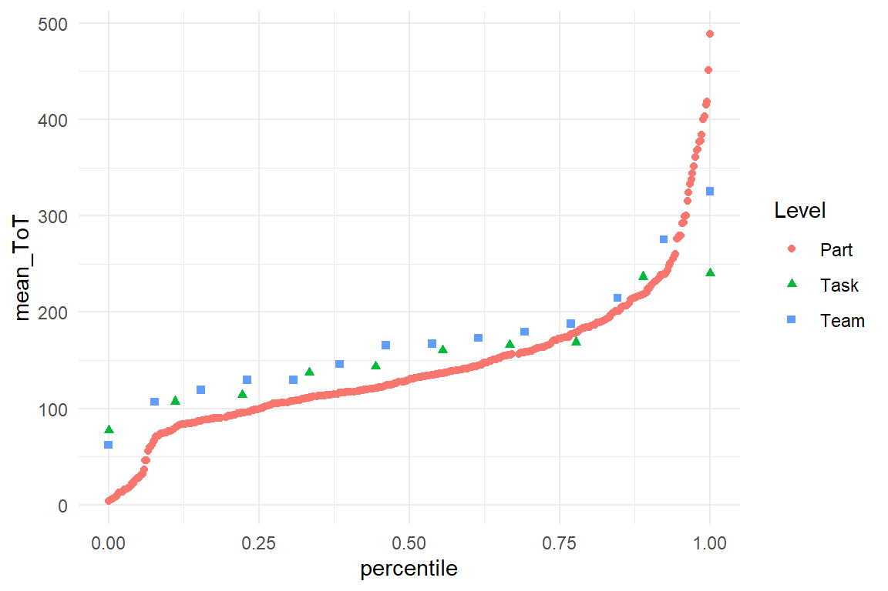
It seems there is ample variation in ToT for participants, with mean ToT ranging from below 100 to almost 500 seconds. There also is considerable variation on team level, but the overall range seems to be a little smaller. Note, however, that the participant level contains all the variation that is due to teams. A model with nested random effects can separate the sources of variation. When two (or more) levels are nested, a special syntax applies for specifying nested random effects. 1|Team/Part.
M_1 <-
D_cue8 %>%
brm(logToT ~ Condition + (1|Team/Part),
data = .)
# logToT ~ Condition + 1|Part/Team
P_1 <- posterior(M_1)Note that the model contains another feature of the CUE8 study, as participants were tested in one of two conditions: moderated and remote testing sessions. As participants are strictly divided into these groups, a participant-level random effect is not useful.
** tbl_post: 4000 samples in 4 chains
| model | parameter | type | fixef | re_factor | entities |
|---|---|---|---|---|---|
| M_1 | ranef | Intercept | Team | 14 | |
| M_1 | ranef | Intercept | Team:Part | 523 | |
| M_1 | b_Conditionmoderated | fixef | Conditionmoderated | NA | 1 |
| M_1 | b_Intercept | fixef | Intercept | NA | 1 |
| M_1 | sd_Team:Part__Intercept | grpef | Intercept | Team:Part | 1 |
| M_1 | sd_Team__Intercept | grpef | Intercept | Team | 1 |
The posterior object reveals two random factors, one for teams and one for participants. The coefficients are in no way different to cross-classified random effects. In both cases, the absolute group mean for a certain participant is obtained by adding up all two coefficients. The syntax really is just a safe way to deal with nested samples, where participant identifiers are re-used within teams. Nothing stops us from doing the following:
D_cue8 %>%
mutate(Part = str_c(Team, Part, sep = "_")) %>%
brm(logToT ~ Condition + (1|Part) + (1|Team), data = .)## Family: gaussian
## Links: mu = identity; sigma = identity
## Formula: logToT ~ Condition + (1 | Part) + (1 | Team)
## Data: . (Number of observations: 2486)
## Samples: 4 chains, each with iter = 2000; warmup = 1000; thin = 1;
## total post-warmup samples = 4000
##
## Group-Level Effects:
## ~Part (Number of levels: 523)
## Estimate Est.Error l-95% CI u-95% CI Rhat Bulk_ESS Tail_ESS
## sd(Intercept) 0.43 0.02 0.39 0.47 1.00 1409 2415
##
## ~Team (Number of levels: 14)
## Estimate Est.Error l-95% CI u-95% CI Rhat Bulk_ESS Tail_ESS
## sd(Intercept) 0.65 0.16 0.43 1.03 1.01 974 1601
##
## Population-Level Effects:
## Estimate Est.Error l-95% CI u-95% CI Rhat Bulk_ESS Tail_ESS
## Intercept 4.63 0.28 4.09 5.20 1.01 763 1354
## Conditionmoderated 0.33 0.36 -0.41 1.02 1.01 962 1456
##
## Family Specific Parameters:
## Estimate Est.Error l-95% CI u-95% CI Rhat Bulk_ESS Tail_ESS
## sigma 0.61 0.01 0.59 0.63 1.00 3878 3101
##
## Samples were drawn using sampling(NUTS). For each parameter, Bulk_ESS
## and Tail_ESS are effective sample size measures, and Rhat is the potential
## scale reduction factor on split chains (at convergence, Rhat = 1).Let’s take a closer look at the results regarding consistency of ToT measures across teams. We would always expect participants to show variation, but if team averages show strong variation, then we can suspect that there are biases. It turns out that the variation by team is by a factor of 1.5 larger than individual differences. And it is on par with the measurement error (sigma).
| parameter | type | fixef | re_factor | center | lower | upper |
|---|---|---|---|---|---|---|
| b_Intercept | fixef | Intercept | NA | 4.611 | 4.059 | 5.150 |
| b_Conditionmoderated | fixef | Conditionmoderated | NA | 0.344 | -0.340 | 1.033 |
| sd_Team__Intercept | grpef | Intercept | Team | 0.617 | 0.415 | 1.014 |
| sd_Team:Part__Intercept | grpef | Intercept | Team:Part | 0.427 | 0.389 | 0.469 |
It is not surprising to see the test users vary greatly in performance. In contrast, the discordance between professional teams is concerning, which even arises after controlling for an experimental factor that could explain the variance, remote or moderated. The opposite seems to be the case. Although one can think of good reasons why these two forms of testing would differ, the difference is rather small (between moderated and remote testing is weak and highly uncertain (\(0.34 [-0.34, 1.03]_{CI95}\)).
| fixef | center | lower | upper |
|---|---|---|---|
| Intercept | 4.611 | 4.06 | 5.15 |
| Conditionmoderated | 0.344 | -0.34 | 1.03 |
Actually, it is not even necessary to specify that participants are nested within teams. If we make sure that participant identifiers are unique across the whole study (not just within a team unit), we can also just use 1|Part + 1|Team. If the participant identifier is only unique within a team, it is either to be recoded, e.g. mutate(Part = str_c(Team, Part)).
In this section we introduced a new perspective on multi-level models. Here, the question was to quantify and compare samples (rather than conditions) as sources of variation. With multi-level models, we can separate sources of variation and conveniently quantify them as standard errors. This builds on how random effects are constructed, as factor levels drawn from a Gaussian distribution. As this matches how measurement errors are represented. In result, we could separate and compare the three levels of variation: participants, team and residuals. In the following section, we will delve deeper into the matter of random effects.
5.7 What are random effects? On pooling and shrinkage
At least half a dozen of defintions exist for the term random effect. This is so confusing that some authors refrain to use the term altogether. Here, the definition is conceptually based on the idea of a population. Technically, it is compatible with the implementation found in rstanarm and other engines. Unfortunately, the very terms random effect and random factor are highly misleading, as there is nothing more or less random in a random factors as compared to fixed factors. The opposite is the case: as we have seen above, a random effects model pulls a variance component from the random term and explains it by assigning coefficients to entities (teams or users). The best advice is to not contemplate over what makes a factor random. It is just a name and because random factors are so amazingly useful, they should be called fonzy factors, instead.
When a data set contains a factor that we may wish to add to the model, the question is: fixed effect or random effect? Above, I have introduced the heuristic of populations. If one can conceive tasks, designs, or whatever set of items as a population, there is clumping to some degree, but also variation. The more clumping there is, the better is the guess for unobserved members by observing some members. In such a case, the predictor is introduced as a fonzy factor. Now it is time to more formally conceive when a set of things is a population.
Obviously, we would never speak of a population, when the objects of interest are from different classes. Entities gathering on super market parking lots, like persons, cars, baskets and and dropped brochures, we would never see as a population. People, we would generally see as a population, as long as what we want to observe is somewhat homogenous. When the question is, how fast persons can do a 2000 meter run at the olympic games, we would certainly want one population per discipline (swimming, running, etc). Why is that so? It is because we expect members of a population to have some similarity, with the consequence that, if you already have observed some members of the population, this tells you something about any unobserved members.
Reconsider the Bayesian principle of prior knowledge by an experiment of thought: Consider, a UX expert with experience in e-commerce is asked to estimate how long it takes users to do the checkout, without being shown the system. The expert will probably hesitate briefly, and then come up with an estimate of, let’s say, 45 seconds. Without any data, the expert made some reasonable assumptions, e.g. that a disciplined design process has been followed, and then relies on experience. The experts personal experience has formed prior to the study by observing many other cases. Now, we confront the expert with an even more bizzare situation: guess the time-on-task for an unknown task with an unseen system of unknown type! The expert will probably refuse to give an answer, arguing that some systems have tasks in the millisecond range (e.g. starting a stopwatch), whereas other processes easily run for hours or days (e.g. doing data exploration). This is agreeable, and we provide the expert with average ToT of four other tasks within the same system:
\(ToT_{1-4} = {23, 45, 66, 54}\)
Now, the expert is confident that ToT be around 50 seconds and that is probably a good guess. What has happened is that prior belief about the unkown task parameter has been formed not externally, but by data as it arrived. The likely value of one unit has been learned from the other units and this appears pretty reasonable. The same principle applies when removing outliers. When staring at a boxplot or scatterplot the mind of the observer forms a gestalt that covers the salient features of data, for example: almost all points are located in the range 100 - 500. Once this pattern has formed, deviant points stand out.
However, the salience of the gestalt may vary. Consider a situation where ToT has been measured by the same procedure, but using five different stop watches. Stop watches are so incredibly accurate that if you know one measure, you basically know them all. What many researchers do with repeated measures data, is take the average. This is the one extreme called total pooling. In the stopwatch case the average of the five measures would be so highly representative, that total pooling is a reasonable thing to do.
In other cases, the levels of a factor are more or less independent, for example tasks in a complex system, where procedure duration ranges from seconds to hours. Guessing the duration of one task from a set of others is highly susceptible and the average duration across tasks is not representative at all. The best choice then is to see tasks as factor levels, that are independent. This extreme of no pooling is exactly represented by fixed effect factors as they have been introduced in 4.
Random effects sit right between these two extremes of no and total pooling and implement partial pooling: the more the group mean is representative for the units of the group, the more it is taken into account. The best thing about partial pooling is that, unlike real priors, there is not even the need to determine the amount of pooling in advance. The variation of entities has been observed. The stronger the enities vary, the less can be learned from the group level. The variation is precisely the group-level standard deviation of the random effect. So, we can think of random factors as factors where there is a certain amount of cross-talk between levels. The random effect estimate then draws on two sources of evidence: all data from the overarching population and data that belongs just to this one entity. As that is the case, the exploratory analysis of individual performance in SOV does not resemble a true random effect, as group means were calculated independently.
How are random effects implemented to draw on both sources? Obviously, the procedure must be more refined than just putting dummy variables in a likelihood formula. In the Bayesian framework a remarkably simple trick suffices, and it is even a familiar one. By the concept of prior distributions, we already know a way to restrict the range of an effect based on prior knowledge. For example, intelligence test results have the prior distribution \(IQ ~ \textrm{Gaus}(100, 15)\), just because they have been empirically calibrated this way. In most other cases, we do have rough ideas about the expected magnitude and range in the population, say: healthy human adults will finish a 2000m run in the range of 5-12 minutes.
As prior knowledge is external to the data, it often lacks systematic evidence, with the exception of a meta analyses. This is why we tend to use weak informative priors. Like priors, random effects take into account knowledge external to the entity under question. But, they draw this knowledge from the data, which is more convincing after all. The basic trick to establish the cross-talk between random factor levels, is to simultaneously estimate factor levels and random factor variation. This has several consequences:
All random effects get a more or less subtle trend towards the population mean. As a side effect, the random factor variance is usually smaller than variance between fixed factors, or naive group means. This effect is called shrinkage. When the random factor variation is small, extreme factor levels are pulled stronger towards the population mean, resulting in stronger shrinkage. Or vice versa: When random variation is large, the factor levels stand more on their own.
The random factor variation is an estimate and as such it is certain only to a degree. As we have seen in 5.5, the more levels a random factor comprises, the more precise is the estimate of random factor variation. The strongest shrinkage occurs with few observations per factor levels and highly certain random factor variation.
Previously, I have stressed how important repeated measures design is, as the number of observations per entity plays a role, too. The more observations there are, the less is the group mean overruled by the population mean. Less shrinkage occurs. This is why multi-level models gracefully deal with imbalanced designs. Groups with more observations are just gradually more self-determined. Taking this to the opposite extreme: when a factor level contains no data at all, it will just be replaced by the population mean. This principle offers a very elegant solution to the problem of missing data. If you know nothing about a person, the best guess is the population mean.
Under the perspective of populations as a more or less similar set of entities, these principles seem to make sense. Within this framework, we can even define what fixed effects are:
a fixed effect is a factor where levels are regarded so unsimilar, that the factor-level distribution can be practically considered infinite.
We routinely approximate such a situation when using non-informative prior distributions, like \(\beta_0 ~ \textrm{Gaus}(0, 10000)\). In the extreme case, a uniform distribution with an infinite upper boundary truly has an infinite variance: \(\beta_0 ~ U(0, \infty)\). A finite population mean doesn’t even exist with such a distribution.
So, when a design researcher has observed that with design A, ToT is approximately distributed as \(ToT_A ~ \textrm{Gaus}(120, 40)\), is it realistic to assume that design B has ToT in the range of several hours? Would a cognitive psychologist see it equally likely that the difference in reaction time on two primitive tasks is 200ms or 2h? Probably not. Still, using fixed effects for factors with very few levels is a justifyable approximation. First of all, priors can be used at any time to factor in reasonable assumptions about the range. Second, with very few estimates, the random factor variation cannot be estimated with any useful certainty. Very small shrinkage would occur and the results would practically not differ.
The CUE8 study makes a case for seeing shrinkage in action: Teams of researchers were asked to conduct a performance evaluation on a website. Tasks and website were the same, but the teams followed their own routines. Some teams tested a few handful of participants, whereas others tested dozens remotely. Teams, as another non-human population (sic!) differ vastly in the number of observations they collected. We can expect differences in shrinkage. To see the effect, we compare the team-level group means as fixed factor versus random factor. All teams have enough participants tested to estimate their mean with some certainty. At the same time, the group sizes vary so dramatically that we should see clear differences in tendency towards the mean.
We estimate two models, a random effects (RE) model and a fixed effects (FE) model. For the RE model, the absolute group means are calculated on the posterior. Figure XY shows the comparison of FE and RE estimates.
M_2 <-
D_cue8 %>%
stan_glm(logToT ~ Team - 1, data = .)
M_3 <-
D_cue8 %>%
brm(logToT ~ 1 + (1|Team), data = ., iter = 100)P_2 <- posterior(M_2, type = "fixef")
P_3_fixef <- posterior(M_3, type = "fixef")
P_3_ranef <- posterior(M_3, type = "ranef")
## Creating a derived posterior with absolute team-level random effects
P_3_abs <-
left_join(P_3_ranef, P_3_fixef,
by = c("chain", "iter", "fixef"),
suffix = c("","_fixef"))
P_3_abs$value <- P_3_abs$value + P_3_abs$value_fixef
T_shrinkage <-
D_cue8 %>%
group_by(Team) %>%
summarize(N = n()) %>%
mutate(fixef = fixef(P_2)$center,
ranef = ranef(P_3_abs)$center,
diff = fixef - ranef)
sd_fixef <- sd(T_shrinkage$fixef)
sd_ranef <- sd(T_shrinkage$ranef)
T_shrinkage %>%
ggplot(aes(x = Team, y = fixef, size = N, col = "fixef")) +
geom_point() +
geom_point(aes(y = ranef, col = "ranef"), alpha = .5)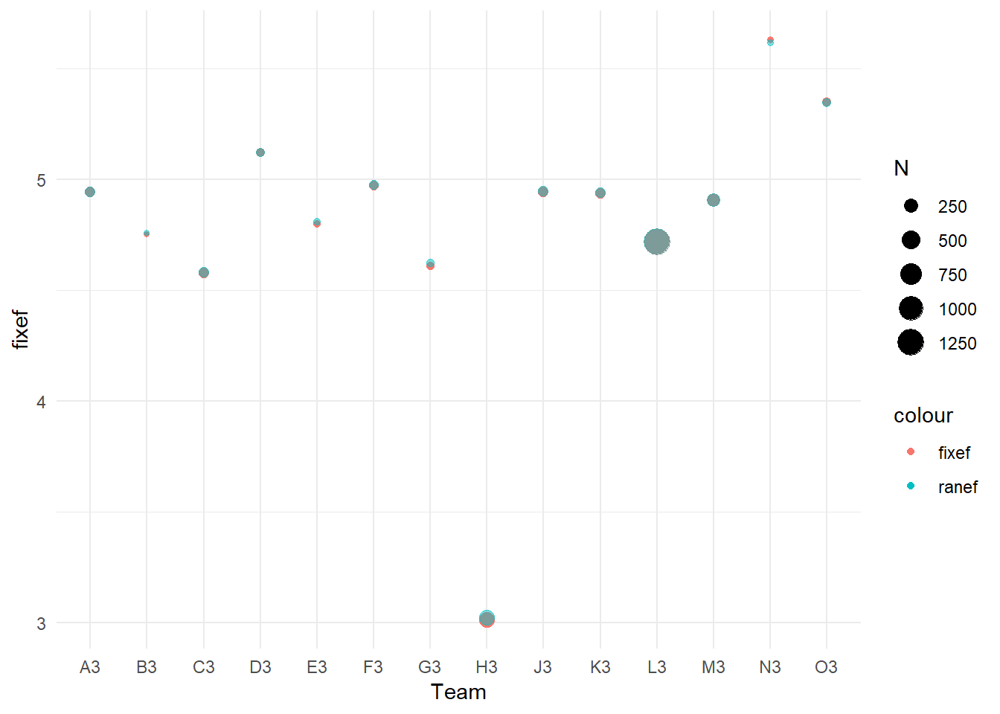
Team H is far off the population average, but almost no shrinkage occurs due to the large number of observations. Again, no shrinkage occurs for Team L, as it is close to the population mean, and has more than enough data to speak for itself. Team B with the fewest observation (a genereous \(N = 45\), still), gets noticable shrinkage, although it is quite close to the population mean. Overall, the pattern resembles the above properties of random effects: groups that are far off the population mean and have comparably small sample size get a shrinkage correction. In the case of CUE8, these correction are overall negligible, which is due to the fact that all teams gathered ample data. Recall the SOV simulation above, where the set of tasks every user did was beyond control of the researcher. In situations with quite heterogeneous amount of missing data per participant, shrinkage is more pronounced and more information is drawn from the population mean.
At the same time, shrinkage adjusts the estimates for variation, with \(sd_{RE} = 0.583 < sd_{FE} = 0.588\). The random effects estimate is an unbiased estimate for the population variance, whereas fixed effects variation would be overestimating. [%REF]
So, random effects are factors with the additional assumption of Gaussian distribution. When a multi-level model is estimated, the population level effect, the random effects levels and the variance of the distribution are estimated simultaneously. This creates two particular advantages of multi-level models with random effects:
- In unbalanced research designs (with unequal number of observations per subject) small groups are corrected towards the population mean.
- Strong outliers are corrected towards the population mean.
In conclusion, whereas classical techniques for repeated measures often require additional tweaks to work well with unbalanced designs and outliers, multi-level models with random effects handle those situations gracefully.
5.8 Psychometrics and designometric models
Up to to this point, we have characterized random factors mainly by their variance. However, a random effect is just like a factor, where the levels are typically entities in a sample. In a multi-level model, these levels are represented as coefficients. Every entity gets their own estimate which represents the level of functioning of the entity. These values can either be compared against an external benchmark, or they are compared to each other. When human individuals are being compared this is called psychometrics.
Traditionally, psychometrics deals with the valid and reliable measurement of personal characteristics, such as individual levels of performance, motivation, socio-cognitive attitude and the like. Advanced statistical models have been devised, such as confirmatory factor analysis or item response models. Formally, these applications establish an order among population entities, from low to high. The least one is aiming for is that for any pair of entities \(A\) and \(B\), we can tell which entity has the more pronounced property. This is called an ordering structure. Fewer applications go beyond mere ranking and establish metric interpretations. For example, in an interval-scaled test, the researcher may compare differences between participants.
In design research, multi-item validated scales are routinely used for one of two purposes:
- A design-related research questions involve traits or abilities of users. For example: Do social network users with high Openness have more connections? A six-item test for Openness is used on every individual in the sample and the scores are compared the number of connections. This is the basic psychometric situation, which is an encounter of persons and items.
- In design research one frequently assesses properties of a design by using multi-item questionnaires. One example would be the comparison of user experience among a set of e-commerce homepages using scales such as the AttrakDiff (the hedonic dimension). Another example would be to map the uncanny valley effect by letting participants judge a set of artificial faces with a multi-item scale to measure eeriness. Apparently, when the aim is to measure a design, the situation is an encounter of users, items and designs. We call this the psychometric situation.
We begin with the first case, standard psychometrics to assess user characteristics. For example, one could ask how a persons visual-spatial abilities are related to performance in navigating a complex hypertext environment, exploring body cavities during surgical procedures or monitoring the scattered displays in air traffic control centers.
In the case of visual-spatial ability, the researcher could administer a test for visual-spatial abilities: for example, participants solve a set of mental rotation tasks and reaction times are collected as a score for spatial processing speed; this would later be compared to performance in a real (or simulated) task, let’s say the number of times an obstacle is hit in a driving simulator. The straight-forward approach would be to take the average measure per person as a score for mental rotation speed.
n_Part <- 20
n_Trial <- 10
n_Obs <- n_Part * n_Trial
D_Part <- tibble(Part = 1:n_Part,
true_score = rnorm(n_Part, 900, 80))
D_Trial <- tibble(Trial = 1:n_Trial)
D_CTT <-
mascutils::expand_grid(Part = D_Part$Part,
Trial = D_Trial$Trial) %>%
left_join(D_Part) %>%
mutate(RT = rnorm(n_Obs,
mean = true_score,
sd = 50)) %>%
mascutils::as_tbl_obs()
D_CTT %>%
group_by(Part) %>%
summarize(score = mean(RT))| Part | score |
|---|---|
| 1 | 956 |
| 2 | 985 |
| 3 | 898 |
| 4 | 1003 |
| 5 | 833 |
| 6 | 903 |
| 7 | 867 |
| 8 | 1041 |
| 9 | 962 |
| 10 | 1015 |
| 11 | 940 |
| 12 | 981 |
| 13 | 995 |
| 14 | 840 |
| 15 | 785 |
| 16 | 1000 |
| 17 | 1047 |
| 18 | 845 |
| 19 | 930 |
| 20 | 720 |
Note how the table only contains the identifiers, but no additional information. The trials in the mental rotation task are assumed to be exchangeable. This is how the so-called classical test theory approach works. In classical test theory, the observed test score \(y_i\) for participant \(i\) is composed of the the true score of participant \(i\), \(\mu_i\), and a Gaussian measurement error \(\epsilon_{ij}\).
\[ y_{ij} = \mu_i + \epsilon_{ij} \]
The following model implements CTT as an absolute group means model ??, with the only difference that the person factor is a random effect, i.e. it assumes a Gaussian distribution of person scores.
CTT assumes that all items function precisely the same way and can therefore be ignored, which is a bold claim. For a set of experimental trials it may (or may not) be true that they are all equally hard. In most other situations item equality is highly questionnable. Two items from the same scale can differ in several aspects, one of which is how hard (or strong) an item is. Consider the following two items from a fictional user experience scale; most likely, the second item would get lower ratings on average, because it is stronger:
- The interface is nice.
- The interface is really cool.
One problem with CTT is that by averaging scores, the CTT swallows any information on item functioning. In contrast, the families of Item response models (IRM), as well as factor analysis models (FAM), do not take for granted that all items act the same. As diverse and elaborated these models are today, they all have in common, that items are modelled explicitly and get their own estimates. Discussing these models in more depth would require a separate book. Still, a simple item response model is nothing but an encounter of persons and test items. With only two populations involved, the standard psychometric model simply is a crossover of person and item random effects.
Some years ago, I proposed a novel personality construct geekism, which states that users differ in how enthusiastic they are about tinkering with technology. The hope was that we could explain differences in user behaviour, such as how they react when having to learn a new software application. A qualitative study with self-proclaimed geeks and several psychometric studies resulted in rating scale with 32 items. The Hugme case is one of the quantitative follow-up studies, where the Geekism scale was used together with the Need for Cognition scale (NCS), which assesses the tendency to enjoy intellectual puzzles in general. We were interested in (1) how the items function, (2) how reliable the scale is and (3) how Geekism correlates with Need-for-cognition.
One important thing to note at this point is that psychometricians like to put things in matrices. An item response matrix is squared, whereas we need the long format for the regression engine. As is shown below, the long form can be transformed into a matrix and vice versa.
D_long <- expand_grid(Part = 1:8,
Item = 1:5) %>%
mutate(rating = rnorm(40)) %>%
mascutils::as_tbl_obs()
D_long
D_long %>%
select(Part, Item, rating) %>%
spread(key = Item, value = rating)| Part | 1 | 2 | 3 | 4 | 5 |
|---|---|---|---|---|---|
| 1 | -0.055 | 0.763 | 0.741 | -0.802 | 0.285 |
| 2 | 1.605 | -0.697 | -2.049 | 0.647 | 0.402 |
| 3 | -1.773 | 0.868 | -1.469 | 0.329 | 0.551 |
| 4 | 0.419 | -0.588 | -0.926 | 0.002 | 0.151 |
| 5 | -1.254 | 0.256 | -1.055 | -0.972 | -0.788 |
| 6 | -1.061 | 0.039 | 0.605 | -1.222 | 1.113 |
| 7 | 1.440 | -0.199 | 1.858 | -0.482 | 0.715 |
| 8 | 0.878 | -0.110 | -0.223 | 1.217 | -0.281 |
Psychometric programs often require matrix data, but for a multi-level models we need the long format. IRM models regard items as populations, too, and the basic IRT model is a cross-classified intercept-only model 5.5.
D_psymx_1 <-
D_quest %>%
filter(Scale == "Geek", Session == 1)
M_psymx_1 <-
D_psymx_1 %>%
brm(rating ~ 1 + (1|Part) + (1|Item), data = .)With such an IRT model, we can extract the person scores, if we want to compare persons. Psychometric evaluation of a rating scale also draws upon items scores. In the following I will demonstrate two psychometric evaluations, using multi-level models:
- Test coverage of a scale can be assessed by comparing the distribution of item scores with the distribution of person scores
- Test reliability can be estimated by comparing scores across two sessions of testing.
- Test validity can be estimated as person score correlations between scales.
5.8.1 Coverage
Geekism was assumed to vary widely in the population of users and we wanted to be able to cover the whole range with good precision. In IRT psychometrics, items and persons are actually scored on the same scale. The person-level coefficients represent the persons’ level of geekism. The item-level effects can best be called item sensitivity. A rule in IRT psychometrics is that for accuracy in a certain range, this range has to be covered by items with a matching sensitivity. An item with consistently high ratings gets a high score, and is able to distinguish low levels of geekism. But, that makes it barely useful for discriminating between geeks on high levels. Just think of how poorly a very simple arithmetic question, like “Which of the following numbers is divisible by 3? [2, 3, 5, 7, 9]” would be able to diagnose the math skills of you, the readers of this book. The inverse is also true: an item with a very strong proposition, like
I always build my own computers
may be great to distinguish between amateur and pro level geekism, but the majority of persons will just say No. So, item sensitivity and a person tendency are inverse. In order to derive a picture on test coverage, it is useful to take the inverse effects and call this strength.
We have a linear model, where the rating is weighted sums of person tendency and item sensitivity. A high rating can mean two things (or both): coming from a very geek person, indeed, or it was a very sensitive item. For a good test coverage we need sensitive items for levels of low geekism and strong, i.e. less sensitive, items for the pros. Because random effects are centered at zero, we can simply reverse the scale with item strength being the negative sensitivity. Now we can compare the distributions of person and item scores side-by-side and check how the person tendencies are covered by item strength. Note that for obtaining the absolute scores, we can use the Bayr function re_scores, but for psychometric analysis, the deviation from the population average is sufficient, hence ranef.
P_psymx_1 <- posterior(M_psymx_1)
T_ranef <-
ranef(P_psymx_1) %>%
rename(geekism = center) %>%
mutate(geekism = if_else(re_factor == "Item", -geekism, geekism)) # reversing
T_ranef %>%
ggplot(aes(x = re_factor,
y = geekism,
label = re_entity)) +
geom_violin() +
geom_jitter(width = .2) +
ylim(-2, 2)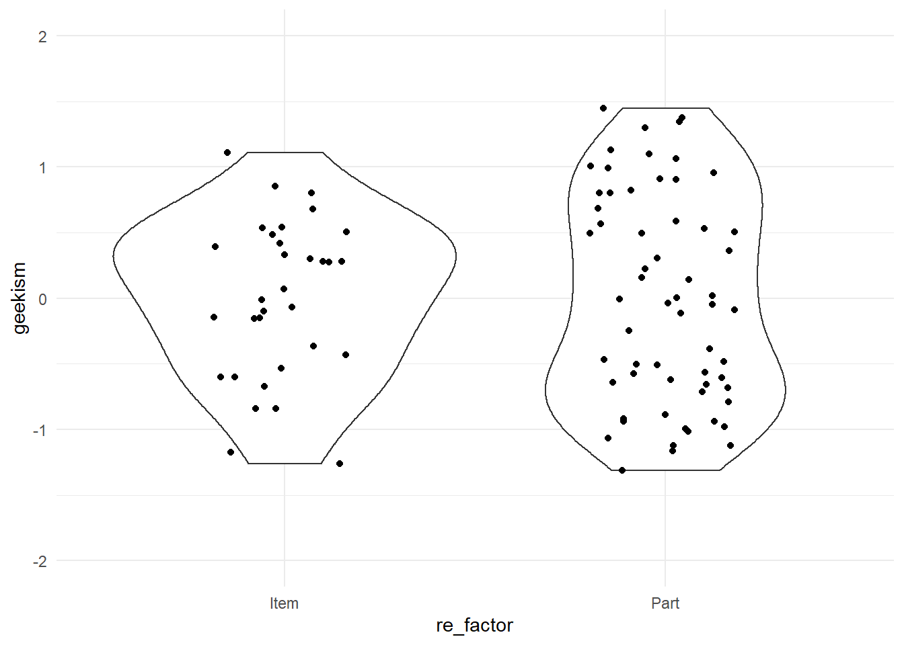 It turns out that the 32 items of the test cover the range of very low to moderately high geekism quite well. The upper 20 percent are not represented so well, as it seems. If we were to use the scale to discriminate between geeks and totally geeks, more strong item had to be added.
5.8.2 Reliability
Next, we examine the reliability of the Geekism scale. Reliability is originally a CTT concept and means that the measurement error is small. For example, a reliable personality scale produces almost exactly the same score when applied to a person on different occasions. Is the Geekism score reliable? In our study we asked participants to fill out the questionnaire twice, with an experimental session in-between. If reliability of Geekism is good, the correlation of scores between sessions should be very strong.
In order to obtain the scores per session, we add an effect to the model. For reliability we are interested in correlation between person scores, so it suffices to add the Session random effect to the participant level, only. However, the same model can be used to do assess stability of item scores, too. This is rarely practiced, but as we will see, there is an interesting pattern.
D_psymx_2 <-
D_quest %>% filter(Scale == "Geek")
M_psymx_2 <-
D_psymx_2 %>%
brm(rating ~ 0 + Session + (0 + Session|Part) + (0 + Session|Item),
data = .)We extract the random effects and plot test-retest scores for participants and items. The red line in the plots indicates perfect stability for comparison.
T_ranef <-
ranef(M_psymx_2) %>%
select(re_factor, re_entity, Session = fixef, score = center) %>%
spread(key = Session, value = score)
sample_n(T_ranef, 5)| re_factor | re_entity | Session1 | Session2 |
|---|---|---|---|
| Part | 36 | 0.410 | 0.352 |
| Part | 21 | -0.925 | -0.836 |
| Part | 11 | -0.240 | -0.222 |
| Part | 2 | -0.645 | -0.585 |
| Item | Geek08 | -0.455 | -0.401 |
plot_stability <-
function(T_ranef) T_ranef %>%
ggplot(aes(x = Session1, y = Session2)) +
facet_grid(.~re_factor) +
geom_point() +
geom_smooth(aes(color = "observed stability"), se = F) +
geom_abline(aes(intercept = 0, slope = 1,
color = "perfect stability"))
T_ranef %>% plot_stability()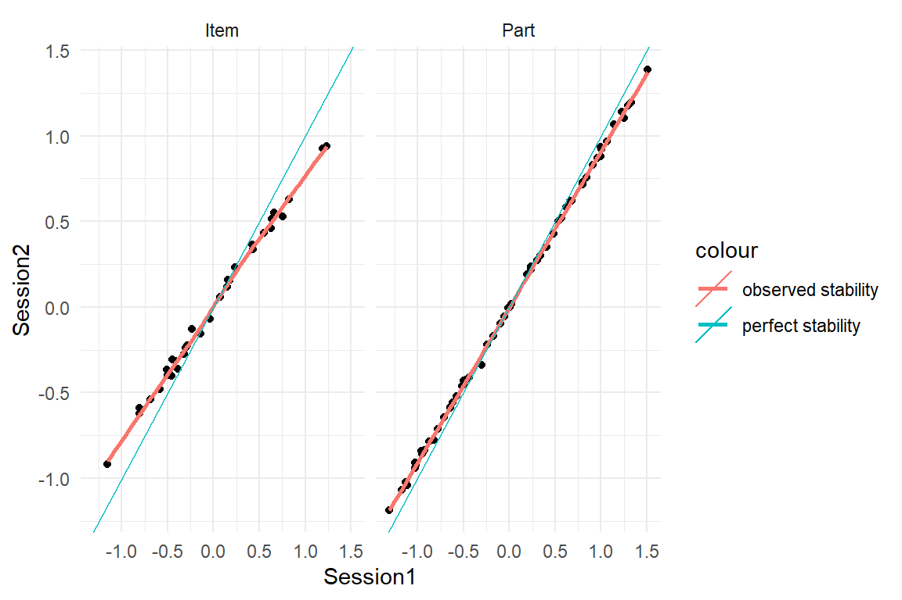
The participant scores are highly reliable. If you measure the score of a person, you almost precisely know the result of another measure a few hours later. At least in short terms, the Geekism construct - whatever it may truly be - can be measured with almost no error. Only ever so slightly is there a trend that lower scores get higher the second time and higher get lower, which could be called a trend towards the average. Something during the experiment has led participants to report a more mediocre image of themselves.
The psychometric model further contains intercept and slope random effects for items, and we can examine test-retest patterns in the same way. We see the same trend towards the average, but much stronger. In psychometric analysis it is common to assess participant-level test-retest reliability, but rarely is that done on items. In the present case, we see that this can be a mistake. Here it seems that the trend towards mediocracy does not produce a bias on the population mean, because it is bi-directional and the item and participant scores are nicely symmetric around the center of the scale. Not every test may have these properties and any asymmetric wear-off effect of items would produce more serious biases.
Another situation where item stability matters is when a person doing the test is actually learning from it. Usually, it is not desired that a test can be learned, because that means people can train for it. would be unfortunateis unlikely to occur in a regular math or intelligence test, but when the items are real-world tasks, like programming a medical infusion pump or driving a car, the participant get a lot of feedback and will learn.
The example of test-retest stability shows one more time, how useful plots are for discovering patterns in data. More formally, test-retest stability is reported as a correlation. We can produce a correlation estimate by using the standard cor command on the participant-level random effects:
| re_factor | cor |
|---|---|
| Item | 0.998 |
| Part | 1.000 |
Unfortunately, this lacks information about the degree of certainty. The better way is to let the regression engine estimate all correlations between random factors that are on the same level (Part, Item). The rgression engine brm fromn package Brms package does that by default, and this is why it has been used, here. The following code extracts the posterior distributions of all correlations in the model, creates an estimates table and a plot of 95% certainties.
clu_cor <-
function(model){
model %>%
posterior() %>%
filter(type == "cor") %>%
mutate(parameter = str_remove_all(parameter, "cor_")) %>%
group_by(parameter) %>%
summarize(center = median(value),
lower = quantile(value, .025),
upper = quantile(value, .975)) %>%
separate(parameter, into = c("re_factor", "between", "and"), sep = "__")
}
M_psymx_2 %>%
clu_cor()| re_factor | between | and | center | lower | upper |
|---|---|---|---|---|---|
| Item | Session1 | Session2 | 0.984 | 0.915 | 0.999 |
| Part | Session1 | Session2 | 0.995 | 0.968 | 1.000 |
With random effects correlations assessing test-retest-stability is straight-forward. If test and retest ramdom effects correlate strongly, we can be sure that the error of measurement is low and we can call it a reliable scale. Good reliability is necessary, but not sufficient to also call a scale valid.
5.8.3 Validity
Reliability doesn’t say anything about what the scale actually measures. In psychometric studies, validity of a scale is routinely evaluated by comparing the scores to external measures. In a perfect world, it would be assessed how scores are related to relevant real-world behaviour, such as:
- Are high-Geek persons more enthusiastic to learn a programming language?
- Do high-Geek persons perform better in computer jobs?
- Are high-Geek persons more likely to buy robot toys for their offsprings?
In the real world, researchers in the field of personality are usually content with relating their scales to other, validated personality scales. In the Hugme study, participants were also asked to rate themselves on the Need-for-Cognition scale (NCS). In very brief NCS measures how much a person enjoys intellectual puzzles. Since computers are intellectual puzzles, sometimes in a good way, often not, we thought that high-Geek persons must also score high on NCS. At the same time, a very strong correlation between Geek and NCS would indicate that the two scales render the same property, which would make one of them redundant, probably the newcomer. The following model estimates the person scores per scale and we can extract the correlation.
| re_factor | between | and | center | lower | upper |
|---|---|---|---|---|---|
| Part | Intercept | ScaleNCS | -0.524 | -0.698 | -0.3 |
We observe a weakly positive association between Geek and NCS, just as was hoped for.
5.8.4 Design-o-metrix
Psychometrics, as it was introduced above, deals with comparing human individuals. In Design Research, this may be of interest, but the real stake is to compare designs. As we will see in this section, psychometric concepts can well be extended to designometric problems. However, there is one twist, which has up til now been overlooked in most of Design Research: in designometric studies the target population is designs, not humans. In a typical psychometric study, measurements are an encounter of humans with items, with the ultimate goal of measuring humans. A designometric measurement is the encounter of three popluations, humans, items and, ultimately, designs. Classic psychometric tools use a 2-dimensional matrix as input and cannot deal with a third dimension. Multi-level models have no such limits. All we have to do, is crossing in another non-human population (non-human-populations).
We revisit the Uncanny Valley data set 4.6. The experiment used eight items from the Eeriness scale [%MacDorman] to ask the judgment of participants on 82 stimuli showing robot faces. In one of our experiments (RK_1), participants simply rated all robots face in three separate session. Here are a few example observations:
| Part | Item | Session | response |
|---|---|---|---|
| p2_02 | nE8 | 1 | -0.168 |
| p2_06 | nE1 | 1 | -1.000 |
| p2_10 | nE4 | 3 | -0.662 |
| p1_13 | nE3 | 1 | -0.500 |
| p1_06 | nE1 | 2 | -0.832 |
| p2_02 | nE8 | 1 | -0.835 |
| p2_02 | nE8 | 1 | -0.818 |
| p1_04 | nE4 | 3 | -0.498 |
With this data we seem to be standing on familiar psychometric grounds: Items are used on persons and we have three measures over time. We can calculate test-retest stability of items and persons using a multi-level model. Voila! Here are your correlations, person and item stability - with credibility limits. Wait a second! What is being measured here? Persons? No, robot faces. The original question was, how human-likeness of robot faces is related to perceived eeriness of robot faces and the Eeriness scale intended purpose is the comparison of designs, not persons. For example, it could be used by robot designers to check that a design does not trigger undesireable emotional responses. Without knowing the humen-likeness scores, robot faces become just a naked sample of designs ??:
UV_dsgmx <-
RK_1 %>%
rename(Design = Stimulus) %>%
select(Part, Item, Design, Session, response) %>%
as_tbl_obs()
UV_dsgmxMeasures in the Uncanny experiment are an encounter of three samples: Part, Item and Design, and Design is the one of interest. That means we need a model that produces Design-level scores. For the user of multi-level models that just means to add a Design random effect to the psychometric model (Part, Item). Models, where a design random factor sits on top of a psychometric model, I call from here on a designometric models. The most basic designometric model is a three-way cross-classified intercept-only model, from which design scores can be extracted. By extending the test-retest psychometric model M_psymx_2, we can estimate test-retest stability.
M_dsgmx_1 <-
UV_dsgmx %>%
brm(response ~ 0 + Session +
(0 + Session|Design) +
(1 + Item) +
(0 + Session|Part), data = .)Like in the psychometric situation, we extract the correlations. Since we have three sessions, we get two stability scores per level.
M_dsgmx_1 %>%
posterior() %>%
clu_cor() %>%
print() %>%
ggplot(aes(x = re_factor,
y = center,
ymin = lower,
ymax = upper)) +
facet_grid(and ~ between) +
geom_crossbar() +
ylim(0,1)## # A tibble: 6 x 6
## re_factor between and center lower upper
## <chr> <chr> <chr> <dbl> <dbl> <dbl>
## 1 Design Session1 Session2 0.987 0.946 0.999
## 2 Design Session1 Session3 0.987 0.945 0.999
## 3 Design Session2 Session3 0.991 0.962 0.999
## 4 Part Session1 Session2 0.815 0.552 0.944
## 5 Part Session1 Session3 0.688 0.343 0.875
## 6 Part Session2 Session3 0.815 0.567 0.933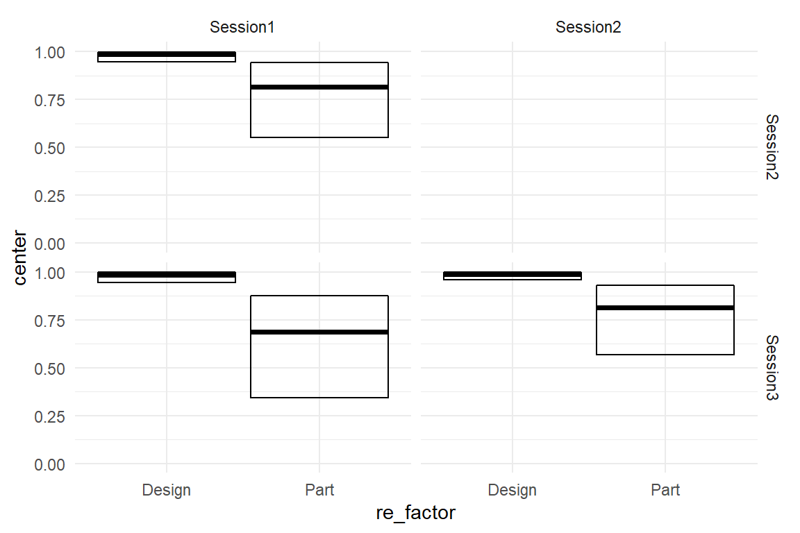
The test-retest stability for designs is very reassuring. Ratings on the Eeriness scale are highly reproducable and the error will be very small. To a lesser, but still sufficient degree are person scores stable.
But, what does the person score (and its stability) actually mean? It describes the tendency of a person to give high ratings on Eeriness. Should a researcher want to assess how vulnerable a person is to the Uncanny Valley effect, the Eeriness scale is also reliable for measuring persons. Many scales in design research lend themselves to be looked at from a designometric and psychometric perspective. For example, a hypothetical scale to measure comfort of sitting can be used to evaluate seats, but can also be used to measure how comfortable a person is with sitting.
No seat fits every person, or put differently: the comfort of a seat depends on the person sitting in it. This points us at one of many possible extensions to carry out deeper designometric analysis. If the difficulty of an item in a psychometric test depends on who is being tested, this is called differential item functioning. For example, the large international student evaluations PISA and TIMMS routinely check their test items for cultural differences. The aim is to formulate test questions in such a way that they are equally comprehensible with all cultural backgrounds. Most likely, this is a desireable property for designometric scales, too. In a multi-level designometric model, this could be incorporated as an interaction effect between cultural background and item-level coefficients.
That all being said about designometric models, my observation is that practically all published rating scales in design research have been validated under a psychometric perspective, rather than a designometric. This is a mistake! If the purpose of the scale is to compare designs, the scale validation must be carried out on the design scores. In the worst case, a designometric scale is evaluated by a study, where a sample of participants and a sample of items do only encounter a single design, rather than a sample. It worries me that practically all purportedly designometric scales out there have been validated under the wrong perspective, and I call this the psychometric fallacy in design research.